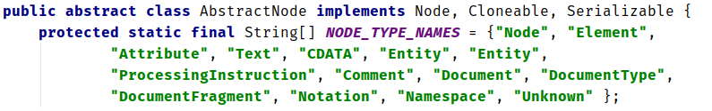
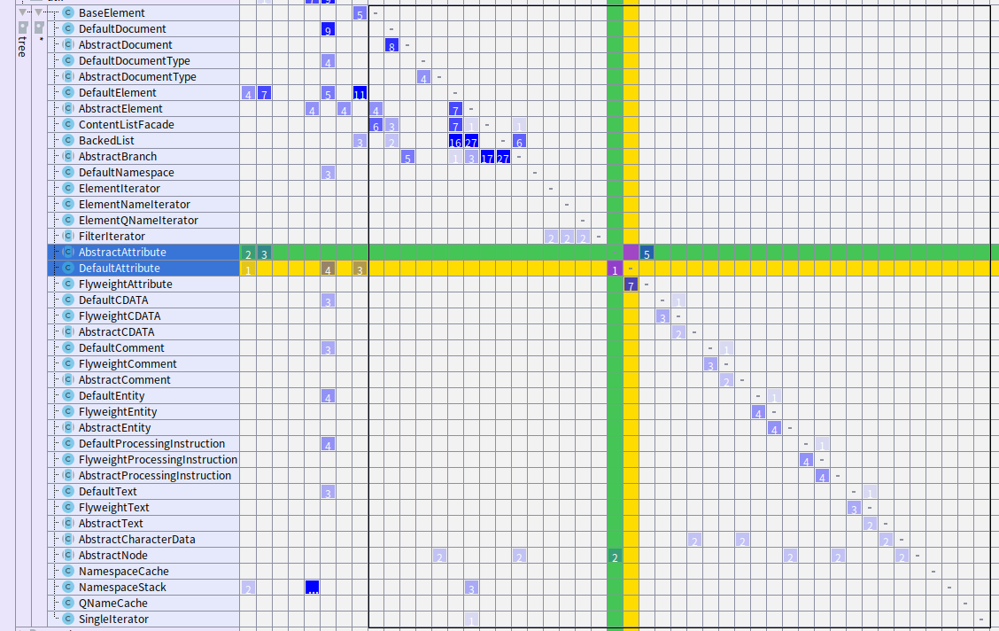
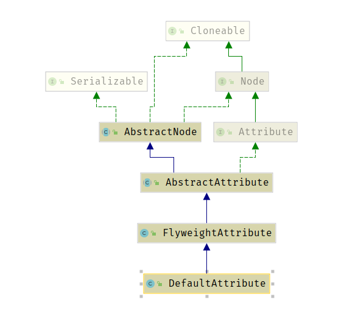

2.2 内部抽象类的结构
当深入跟踪XML解析过程的调用栈时，我们都会一次次进入tree包。 从AbstractNode的类型名数组中就可以看出Tree包通过抽象类实现了图1中所有的外部接口。

直观上去看这个包的文件列表和依赖关系如下，几乎每一个接口都拥有抽象类，享元类和默认创建类。

Tree包内部类的耦合度极低，反映在具体的类图上如下，以Attribute为例。 抽象类AbstractAttribute负责对上层的接口进行小幅度的封装，形成一些较为复杂的功能，而不局限于单独的Attribute节点。 Flyweight享元类用于减少存储开销，这在第三章中还会详细介绍。 而defaultAttribute类则在工厂实例化时可以用到。
